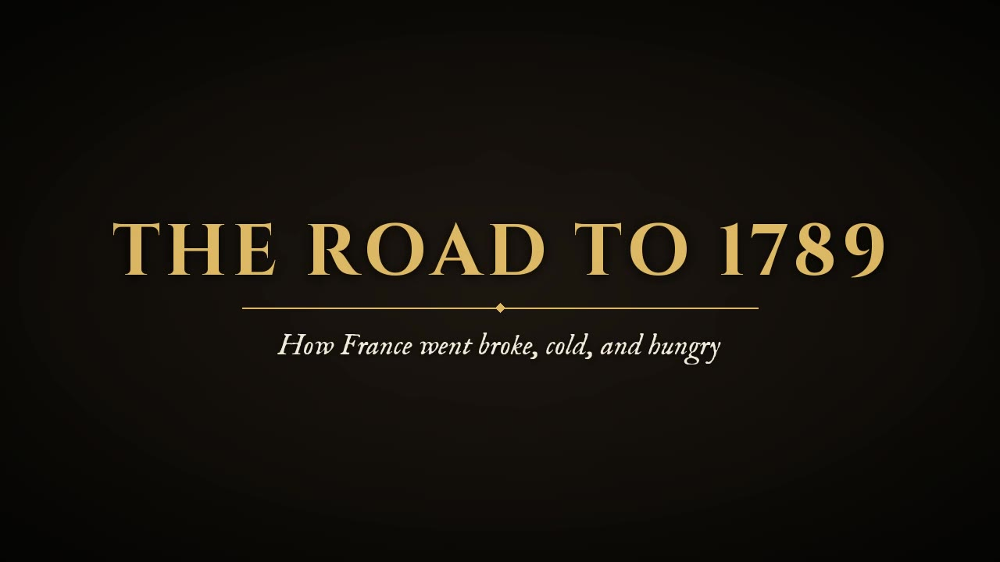
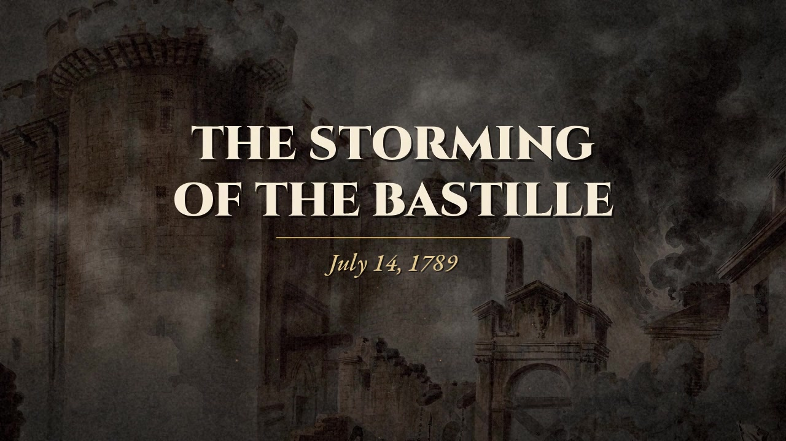
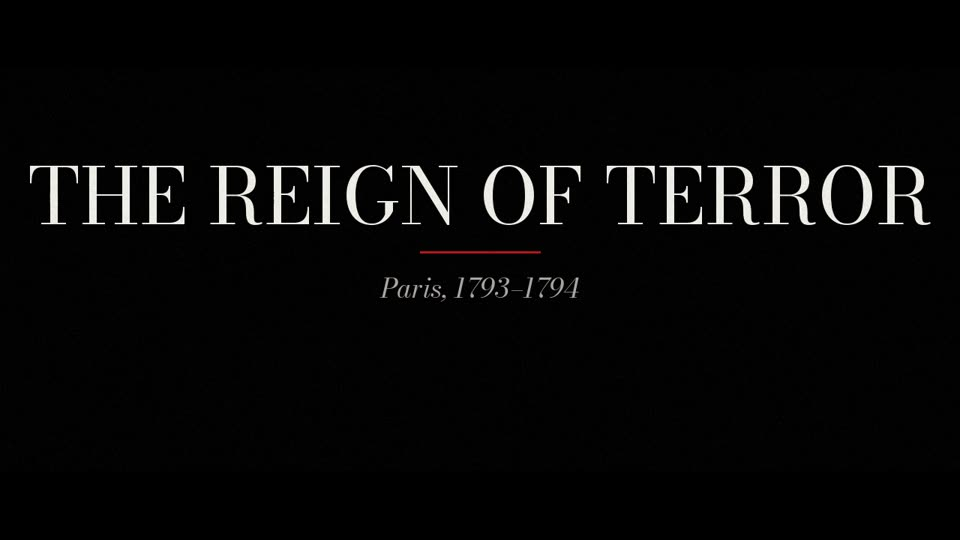
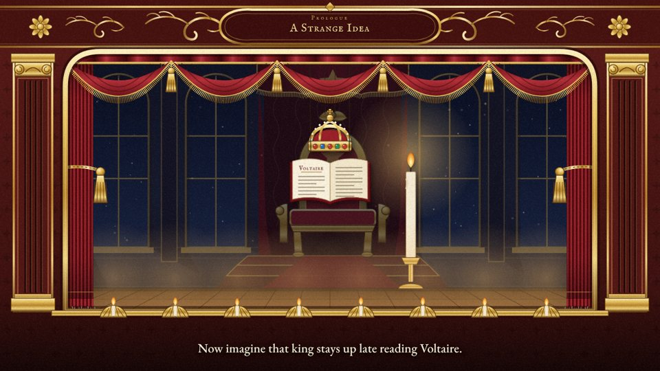

Global History 10
History videos for class
Short narrated videos I made with AI tools for our French Revolution unit. Each one runs a few minutes and has captions on screen.

The Road to 1789
6 minutes
How France went broke, cold, and hungry. It ends on a question: who is really to blame?

The Storming of the Bastille
3 minutes
July 14, 1789, hour by hour. It ends on a question: a win for freedom, or the day the Revolution learned that violence works?

The Reign of Terror
5 minutes
Robespierre and the list of the condemned. It ends on a question: do the ends justify the means? It has hard images, so preview it first.

The Enlightened Despots
Animated short
Frederick the Great, Catherine the Great, and Joseph II: reform from the top down, but no vote for the people.